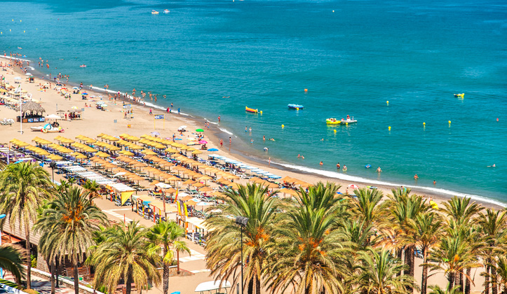

Beach, espetos, a beach club afternoon and an open-air festival at the bullring — how to fit everything into a single unforgettable day on the Costa del Sol.
18 Jun 20268 min readItinerary · Torremolinos
Central Torremolinos — the starting point for a perfect Costa del Sol day
Some places leave you wanting a second day. Torremolinos is one of them. Seven kilometres of Blue Flag beach, a historic centre full of murals, chiringuitos where the fried fish never disappoints, beach clubs that kick off at 4pm and — when the sun drops — an evening that keeps on going. All in the same town, all walkable or a short train ride away.
This is the guide to getting the most out of a single day in Torremolinos without wasting a single hour.
9:00 Breakfast on Calle San Miguel
Arrive in the centre of Torremolinos before the heat builds. Calle San Miguel — the town's pedestrianised main street — is at a different pace first thing in the morning: terrace tables with space, Mediterranean light and the smell of fresh coffee drifting out of the cafés.
Order a café con leche and a mollete (soft bread roll) with olive oil and tomato — the classic Andalusian breakfast — at any bar on the street. Take time to stroll before it fills up. Look at the murals: Ava Gardner, Frank Sinatra, Paco de Lucía, Camarón de la Isla. Torremolinos has a history of freedom and cosmopolitanism going back to the 1960s that is still visible on every corner.
10:00 Casa de los Navajas and Torre de Pimentel
A few minutes from the centre, two cultural stops that almost no tourist puts on their list — and both worth ten minutes each.
The Casa de los Navajas is a 1920s neo-Moorish manor house inspired by the Alhambra, now converted into a cultural space with exhibitions and tropical gardens. Free entry and views of the Mediterranean from the tower. A genuine discovery.
The Torre de Pimentel (or Torre de los Molinos) stands at the end of Calle San Miguel, next to the Cuesta del Tajo. This 14th-century watchtower is the building that gave the town its name — the watchpoint from which coastal raids were spotted. You cannot go inside, but seeing it is worth the walk.
10:30 Down to the beach via the Cuesta del Tajo
From the Torre de Pimentel, descend via the Cuesta del Tajo — a steep lane with craft and souvenir shops on both sides that leads directly down to El Bajondillo beach. One of the most picturesque beach approaches on the entire Costa del Sol.
If you'd rather not walk down, there is a free municipal lift (ascensor) on Calle de las Mercedes that connects the town centre to the seafront promenade.
11:00 Morning at El Bajondillo beach
Playa del Bajondillo is Torremolinos' most central beach: more than a kilometre of dark fine sand, calm water ideal for swimming and a full set of facilities — sun loungers, parasols, beach bars, showers and lifeguards. Blue Flag certified every year.

Playa del Bajondillo — the most central and well-equipped beach in Torremolinos.
Hire a sun lounger and spend the morning here. El Bajondillo is well-equipped without being overwhelmingly crowded (relative to La Carihuela). Paddle boards, kayaks and banana boats are available for hire directly on the sand. Tip: arrive before 11am in July and August to get a good spot.
14:00 Espetos and fried fish at La Carihuela
When midday arrives, move the plan west to the La Carihuela neighbourhood — about 20 minutes on foot along the seafront promenade, or a few minutes by train.
La Carihuela is Torremolinos' most authentic fishing quarter. Its two kilometres of beach are backed by chiringuitos and family restaurants where the fish is always fresh that day. The mandatory ritual: a plate of espetos (sardines skewered on bamboo canes and grilled over a wood fire on the beach), a portion of boquerones (anchovies), and a cold beer watching the Mediterranean.
Chiringuitos with a visible boat hull on the sand are the real thing — that is where espetos are made properly. Tip: book a table in July and August, as La Carihuela restaurants fill up quickly at lunch.
16:00 Afternoon at a Los Álamos beach club
After lunch, head east to Los Álamos — the area of Torremolinos that concentrates the best-known beach clubs on the Costa del Sol. Two options worth knowing:
Kokun Ocean Club — probably the most famous beach club in Málaga province. Sun loungers, Balinese beds, DJ sets from 4pm and a menu mixing Mediterranean with Asian and American influences. The atmosphere ramps up through the afternoon to become a full sunset party. Locals say it competes with the best in Marbella.
Playa Santa — more elegant and composed, with pre-Columbian-inspired decor, Mediterranean-fusion cuisine and handcrafted cocktails. The choice if you prefer something a little more relaxed than Kokun.
Getting there: Los Álamos has its own Cercanías C1 station. From El Bajondillo it is about 20 minutes on foot along the seafront, or five minutes by train from La Nogalera station.
18:30 Sunset from Parque de la Batería
If the beach club energy calls for a quiet pause before the evening, Parque de la Batería (Playamar area) has a viewing tower with panoramic views of the coast: Torremolinos, Benalmádena and the Sierra de Mijas with the Mediterranean below. There are shaded paths, a small lake with rowing boats and a calm family atmosphere. Perfect for a breather.
20:00 Aperitivo at La Nogalera
Back in the centre, the Plaza de La Nogalera at eight in the evening in summer is a different world from the morning. Terraces packed with people, music flowing out of the bars, visitors from across Europe mixing in the quarter that was Spain's first openly LGBTQ+ neighbourhood in the 1960s.
La Nogalera is living Torremolinos history — and the perfect spot for a pre-show aperitivo. Order tapas at any bar on the square (croquetas, jamón, gambas al ajillo), a vermut or a gin and tonic, and let the atmosphere warm you up for the best part of the day.
22:00 Plaza Paraíso at the bullring
And here is the plan that transforms a good day into a genuinely memorable one.
The star plan
Plaza Paraíso
Plaza Paraíso is Torremolinos' open-air summer festival, set inside the Plaza de Toros — the Andalusian-modernist bullring that reinvented itself as a cultural and entertainment venue. From 25 July to 13 September 2026, it hosts concerts, theatre, DJ sessions and a gastrofest in one of the most singular settings on the Costa del Sol.
When a venue with genuine Andalusian architecture and the acoustics that only circular spaces have becomes the stage for a summer festival, the result is not just another event. It is an evening you cannot find anywhere else on the coast.
The perfect way to end a day that started with coffee on Calle San Miguel and finishes with music under the Torremolinos sky. Check the full programme and book in advance — events sell out.
The day at a glance
Time
Plan
Area
09:00
Breakfast on Calle San Miguel
Town centre
10:00
Casa de los Navajas + Torre de Pimentel
Town centre
10:30
Down the Cuesta del Tajo to the beach
Town centre
11:00
El Bajondillo beach (swim + water sports)
Bajondillo
14:00
Espetos and fried fish at La Carihuela
La Carihuela
16:00
Beach club afternoon at Los Álamos
Los Álamos
18:30
Sunset at Parque de la Batería
Playamar
20:00
Aperitivo at La Nogalera
Town centre
22:00
Plaza Paraíso at the bullring
Av. del Real
Getting around Torremolinos
The Cercanías C1 train connects the whole length of the town. Stations at La Nogalera (town centre), El Pinillo, Montemar Alto, La Colina and Los Álamos cover virtually all of today's stops. A ticket costs €2–5 and trains run every few minutes in peak season. The full-length seafront promenade (7 km) connects La Carihuela to Los Álamos via El Bajondillo and Playamar — ideal for walking between stops.
Quick answers
FAQ: One day in Torremolinos
Is one day enough to see Torremolinos?
Torremolinos fits comfortably into a day, but it rewards a longer stay. One day is enough to do the beach, La Carihuela, a beach club and an evening show at Plaza Paraíso. With two or three days you can add day trips to Málaga, Mijas or the Caminito del Rey.
How do I get from Málaga airport to Torremolinos?
The Cercanías C1 train runs from the airport directly to Torremolinos in about 8 minutes, costing €2.05. It runs every 20 minutes. A taxi takes 10 minutes and costs €12–18. Torremolinos is the closest resort to Málaga Airport on the Costa del Sol.
What is the best area to stay in Torremolinos?
For access to everything in this itinerary, staying around El Bajondillo or the town centre is ideal — you can walk to the beach, Calle San Miguel, La Nogalera and Plaza Paraíso. La Carihuela is quieter and closer to the best restaurants for fish and espetos.
Do I need to book Plaza Paraíso tickets in advance?
Yes. Plaza Paraíso events (25 July – 13 September 2026) sell out, especially for the bigger concerts and shows. Book online at plazaparaiso.com before your trip. Most events are priced between €15 and €35.
The perfect end to the day
Plaza Paraíso at the Torremolinos bullring
25 July to 13 September 2026. Concerts, theatre, a gastrofest and DJ sessions — open to the sky, Thursday to Sunday from 7pm.